Sidelhorn
August 28, 2021 by Pat and Bruno ‐ 3 min read
| Difficulty | T3 |
|---|---|
| ⇄ Distance | 7.7 km |
| ↑ Up | 700 m |
| ↓ Down | 700 m |
| Notable Locations | Grimselpass, Sidelhorn |
| Public Transit Access? | Yes |
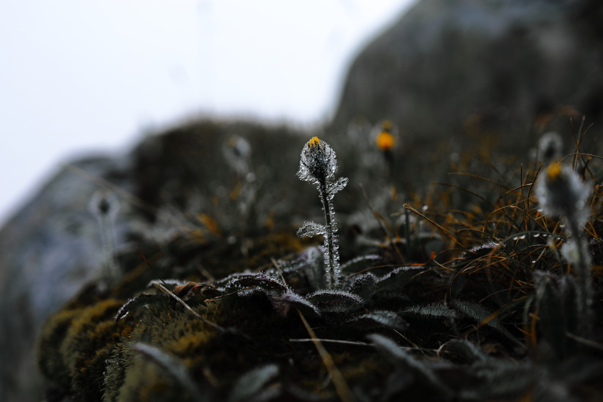
Quick Summary
- A very foggy hike from the
Grimselpass to theSidelhorn . - There is a PostAuto that fairly regularly goes up to the top of the Grimselpass.
- PostAuto stop
Grimsel Passhöhe - Lots of parking is also available at a number of parking lots close to the top of the pass.
- PostAuto stop
- Generally unproblematic but a few spots were a little sketchy since they were ice covered.
- Incredible panorama with view of:
Grimselpass Furkapass Oberaarhorn Grimselsee andOberaarsee - Probably lots of other places if you visit on a clear day
A Very Foggy Approach
 After a very long discussion in the restaurant at the
After a very long discussion in the restaurant at the
 It was extremely foggy for most of the way up to the
It was extremely foggy for most of the way up to the
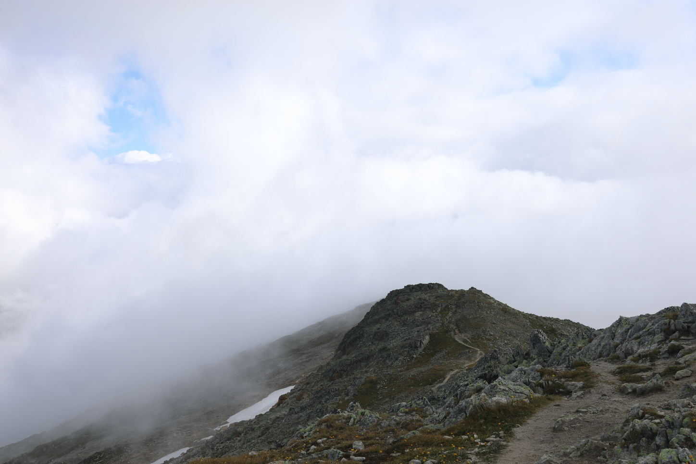 A view of the path we'd taken up to the ridge line. After not having a viewing distance of more than about 10 m for most of the hike, we were finally rewarded with our first glimpses of blue skies once we got further up the ridge line.
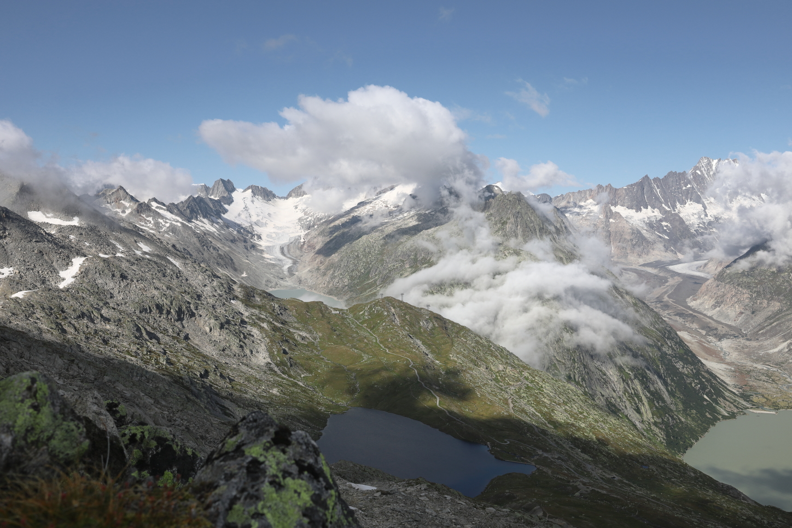
Shortly before reaching the final (fairly steep) ascent to the summit, the clouds cleared up seemingly out of nowhere. Truly a spectacular view down the valley towards the
Sidelhorn
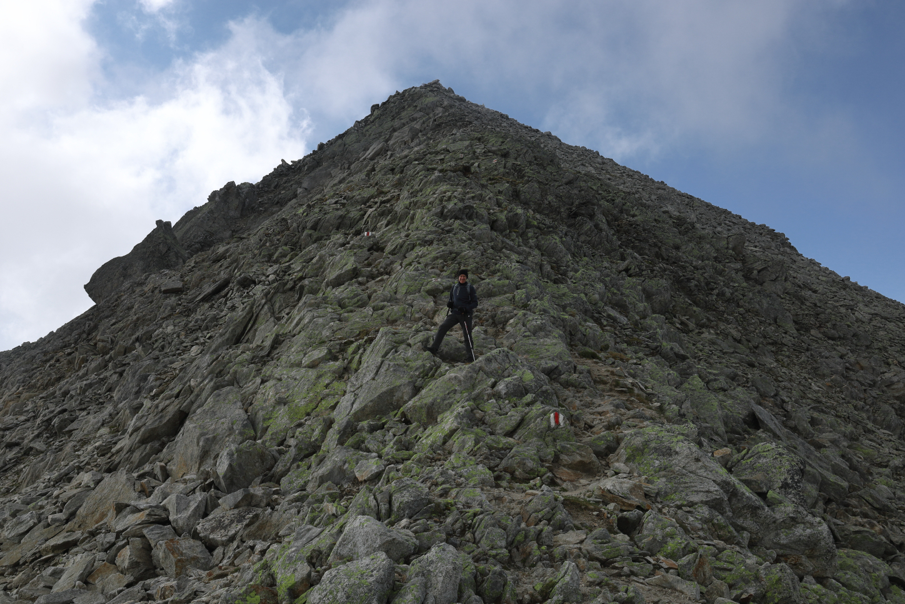
The last bit to the top of the
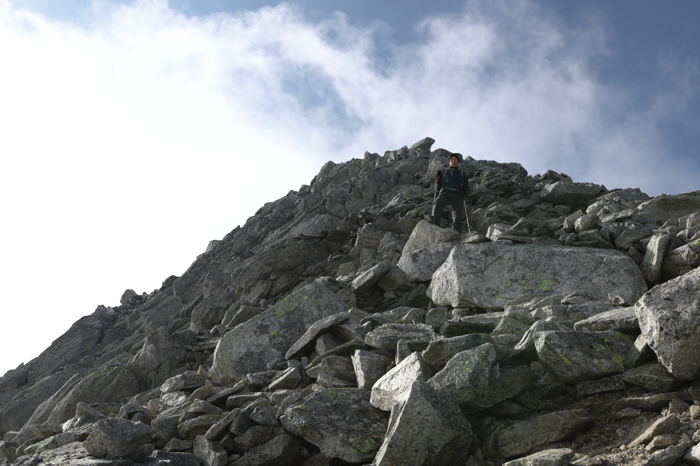 Despite it being August, it was very cold up here. Quite a bit of the path close to the summit was ice covered, which made an otherwise (relatively) easy ascent become a little sketchy.
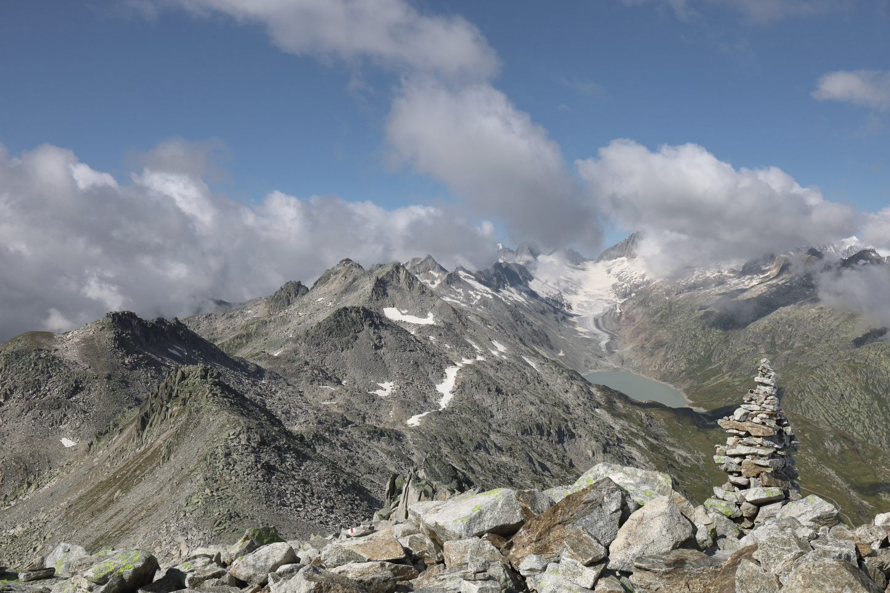
A view from the summit of the
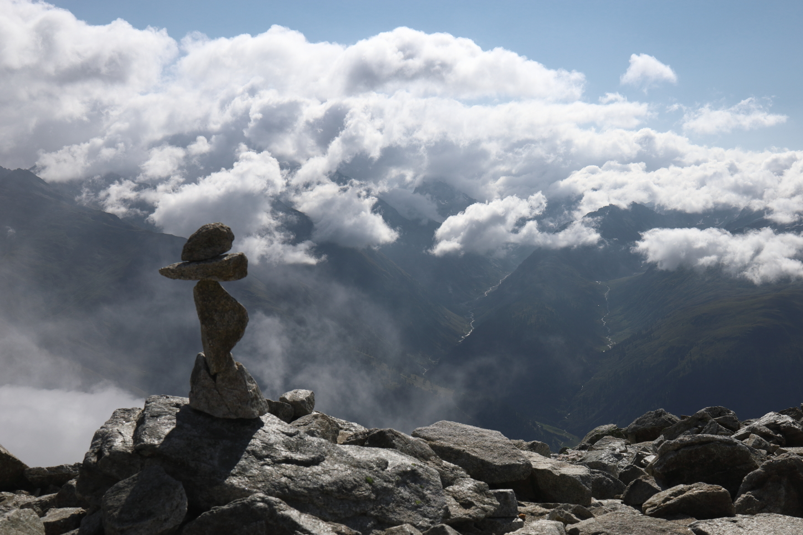
View towards the
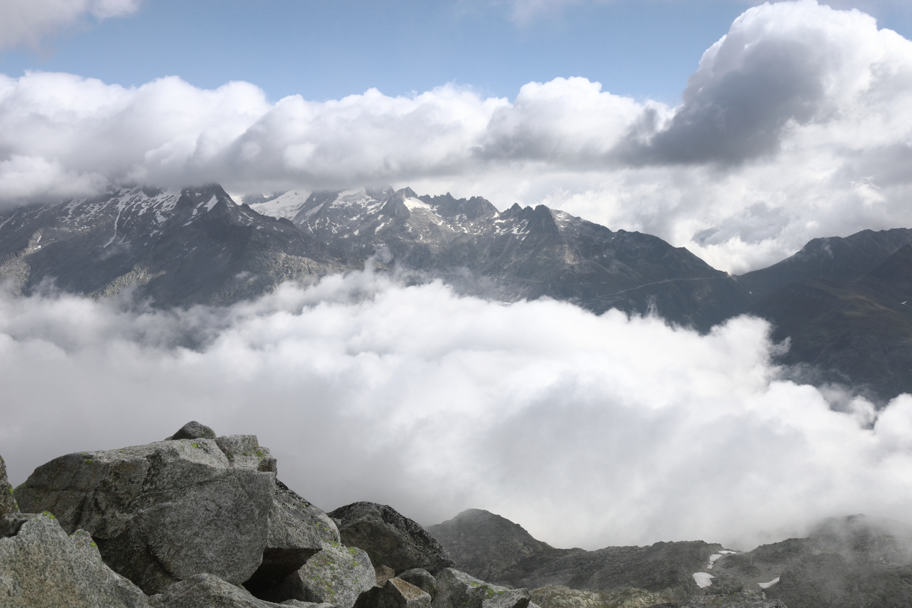
A small window in the clouds let us have a brief view of the
Descent to the Triebteseewli
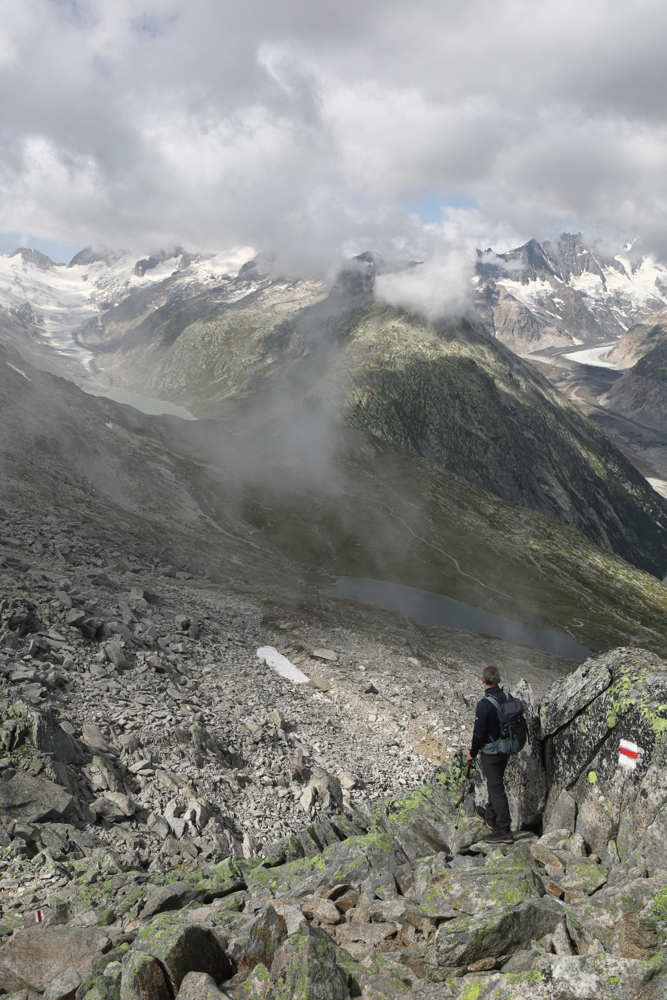
The descent along the western ridge line towards the
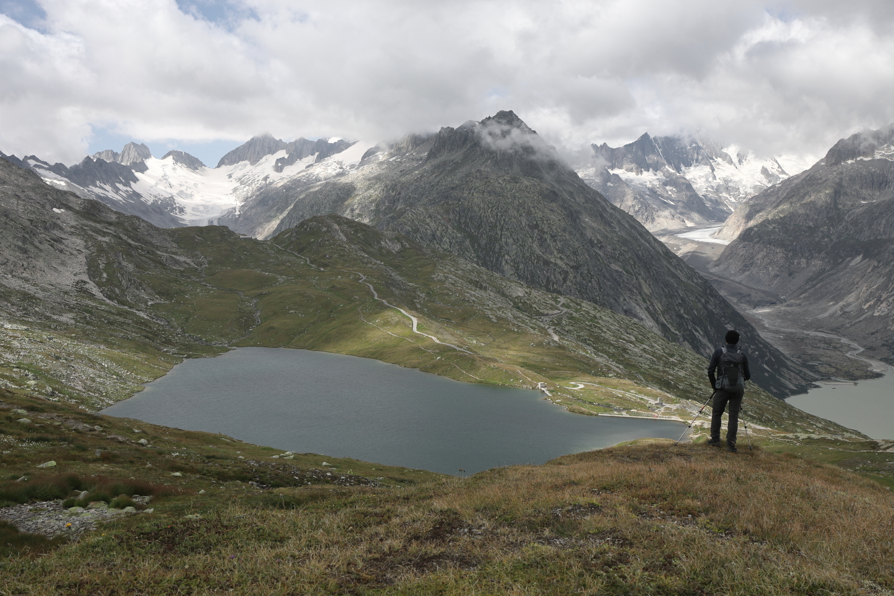
A view up the valley after descending from the
Return via the Husegghütte
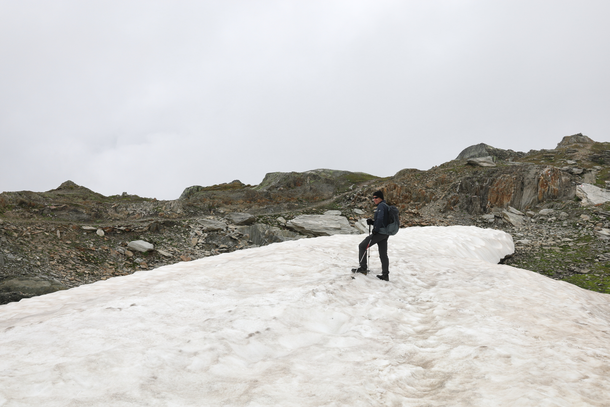
We returned to the
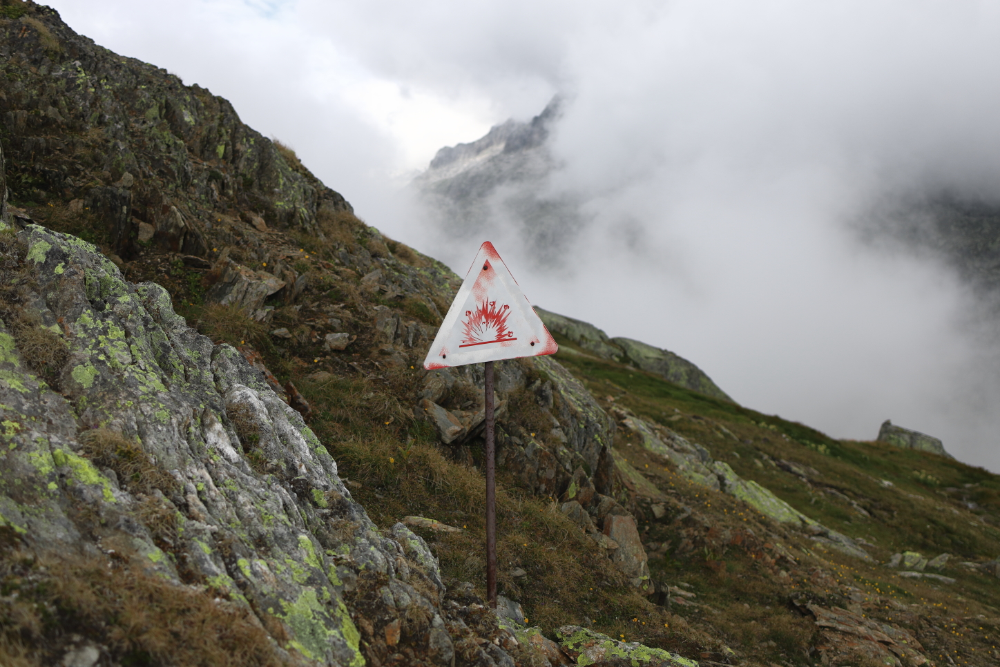 This was something we're always careful about regardless of where we're hiking in Switzerland, but especially if there are signs warning us about it. Luckily we didn't find any UXOs on our hike.
 The final descent back to the
The final descent back to the